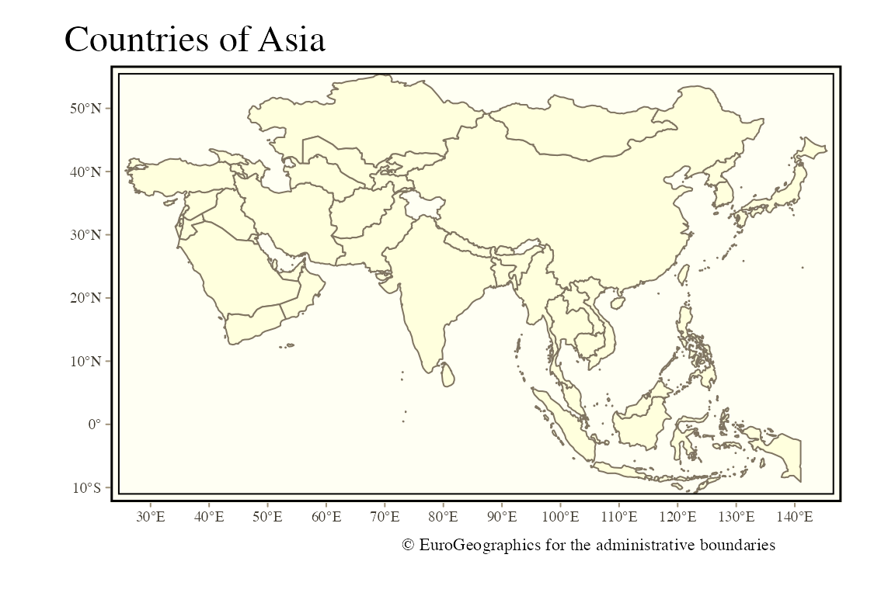
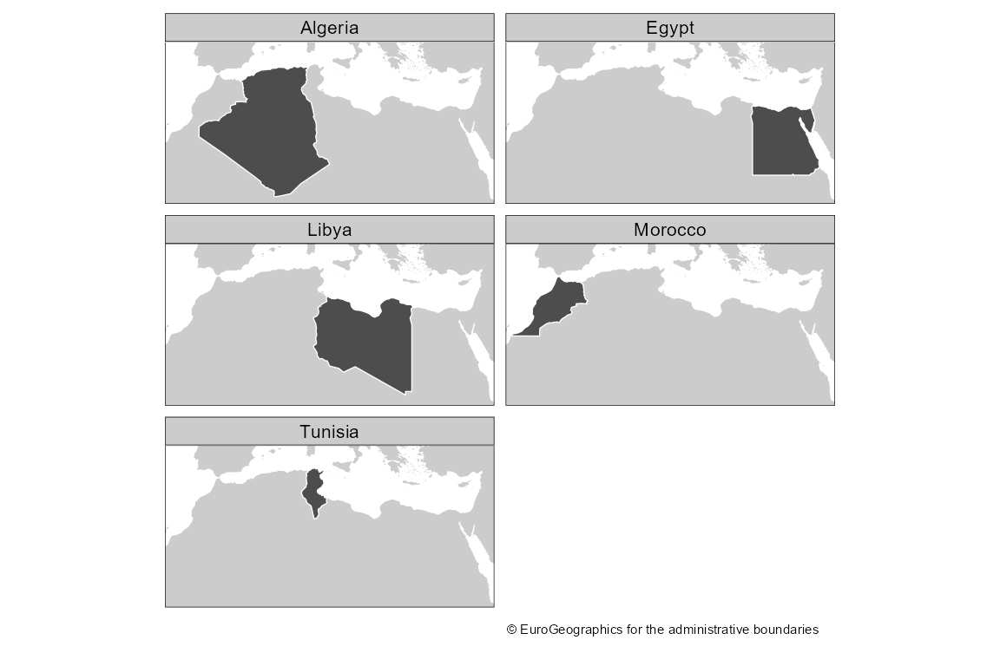
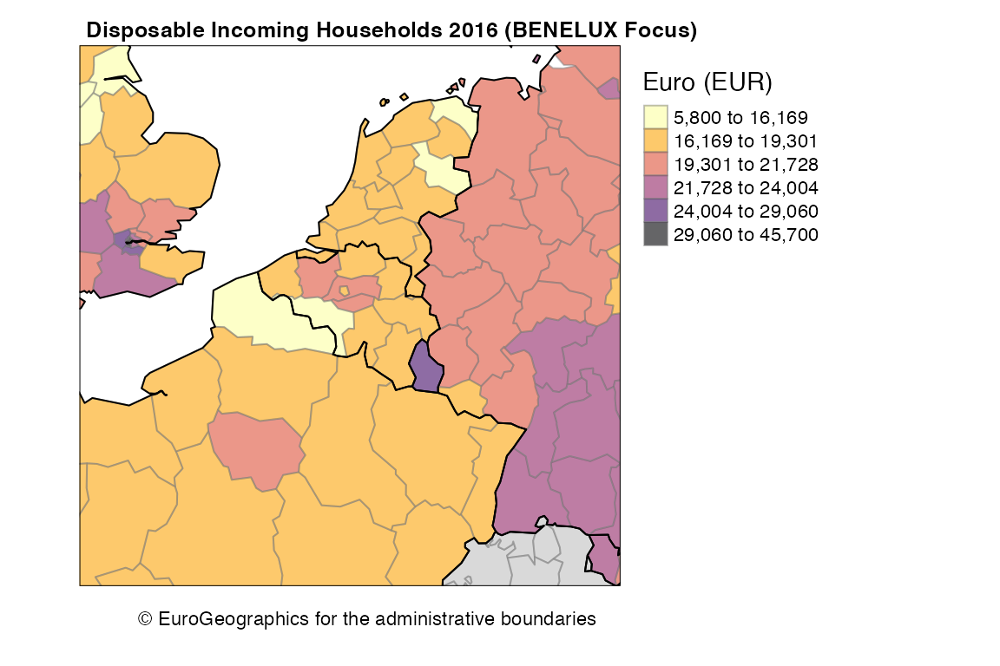

Full site with more examples and vignettes on https://dieghernan.github.io/giscoR/
giscoR is a package designed to provide a clean interaction with the GISCO API.
Within Eurostat, GISCO is responsible for meeting the European Commission’s geographical information needs at 3 levels: the European Union, its member countries, and its regions. GISCO also provides a variety of shapefiles on different formats, focusing specially in the European Union area, but providing also some worldwide shapefiles, as country polygons, labels or borders and coastal lines.
GISCO provides data on different resolutions suitable for representing small areas (01M, 03M) as well as lightweight datasets specially useful for representing wider areas (10M, 20M, 60M). Shapefiles are provided on 3 different projections: EPSG 4326, 3035 or 3857.
giscoR returns sf objects, so the sf package is necessary.
giscoR provides a dataset caching capability, that could be set as:
options(gisco_cache_dir = "~/path/to/dir")When this option is set, giscoR just load first the requested shapefile from the local directory, speeding up the loading process. If the file is not available locally, it would be downloaded to that directory so the next time you need the corresponding data it would be loaded from the local directory.
If you experience any problems on downloading, you can also manually download the file from the GISCO API website and store it on your local directory.
Install giscoR from CRAN:
install.packages("giscoR")Development version (Github):
library(remotes)
install_github("dieghernan/giscoR")Please be aware that downloading provisions apply when using GISCO data. There is a function, gisco_attributions that would guide you on this topic. It also provides attributions on several languages.
library(giscoR)
gisco_attributions(copyright = TRUE)
#> [1] "© EuroGeographics for the administrative boundaries"Some examples on data downloads
library(sf)
library(tmap) # Use tmap for plotting
countries <- gisco_get_countries(region = "Asia")
tmap_style("classic")
tm_shape(countries) +
tm_graticules(lines = FALSE) +
tm_polygons() +
tm_credits(gisco_attributions(copyright = "FALSE")) +
tm_layout(main.title = "Countries of Asia",
attr.outside = TRUE)
You can select specific countries by name (in any language), ISO 3 codes or Eurostat codes. The only restriction is that you can’t mix country names, ISO3 and Eurostat codes on one single call.
It is possible also to combine different shapefiles, just set resolution and epsg (and optionally year) to the same value:
africa_north <-
gisco_get_countries(
country = c("Morocco", "Argelia", "Libia", "Tunisia", "Egypt"),
resolution = "20",
epsg = "4326",
year = "2016"
)
# Coastal lines
coast <- gisco_get_coastallines(resolution = "20",
epsg = "4326",
year = "2016")
# Plot
# Coastline
tm_shape(coast, bbox = c(-13, 18.5, 37, 40)) +
tm_fill(col = "grey80") +
# Shape of Africa
tm_shape(africa_north) +
tm_polygons(col = "grey30", border.col = "white") +
# Facets
tm_facets(by = "NAME_ENGL") +
tm_credits(gisco_attributions(copyright = "FALSE"),
position = c("right", "bottom")) +
tm_layout(attr.outside = TRUE)
giscoR
This is an example on how giscoR can play nicely with some Eurostat data. For plotting purposes we would use the tmap package, however any package that handles sf objects (e.g. ggplot2, mapsf, leaflet, etc. could be used).
Also colorspace and rcartocolor packages are recommended, as they provide great color palettes.
nuts2 <- gisco_get_nuts(
year = "2016",
epsg = "4326",
resolution = "20",
nuts_level = "2"
)
#Borders
borders <- gisco_get_countries(
epsg = "4326",
year = "2016",
resolution = "20",
region = c("Europe")
)
# Eurostat data - Purchase parity power
pps <- giscoR::tgs00026
pps <- pps[pps$time == 2016, ]
nuts2.sf <- merge(nuts2,
pps,
by.x = "NUTS_ID",
by.y = "geo",
all.x = TRUE)
# Plot
tm_shape(nuts2.sf, bbox = c(-1, 47, 10, 54)) +
tm_polygons(
"values",
pal = "-inferno",
alpha = 0.6,
style = "headtails",
style.args = list(thr = 1),
showNA = FALSE,
border.alpha = 0.5,
border.col = "grey50",
title = "Euro (EUR)"
) +
# Add borders
tm_shape(borders) +
tm_borders(col = "black") +
# Credits and format
tm_credits(gisco_attributions(),
position = c("right", "bottom")) +
tm_layout(
main.title = "Disposable Incoming Households 2016 (BENELUX Focus)",
main.title.size = 0.8,
main.title.fontface = "bold",
legend.outside = TRUE,
attr.outside = TRUE
)
Details
#> R version 4.0.5 (2021-03-31)
#> Platform: x86_64-w64-mingw32/x64 (64-bit)
#> Running under: Windows Server x64 (build 17763)
#>
#> Matrix products: default
#>
#> locale:
#> [1] LC_COLLATE=English_United States.1252
#> [2] LC_CTYPE=English_United States.1252
#> [3] LC_MONETARY=English_United States.1252
#> [4] LC_NUMERIC=C
#> [5] LC_TIME=English_United States.1252
#>
#> attached base packages:
#> [1] stats graphics grDevices utils datasets methods base
#>
#> other attached packages:
#> [1] tmap_3.3-1 sf_0.9-8 giscoR_0.2.4.9000
#>
#> loaded via a namespace (and not attached):
#> [1] xfun_0.22 lattice_0.20-41 htmltools_0.5.1.1 stars_0.5-2
#> [5] viridisLite_0.3.0 yaml_2.2.1 base64enc_0.1-3 XML_3.99-0.6
#> [9] rlang_0.4.10 e1071_1.7-6 pkgdown_1.6.1 DBI_1.1.1
#> [13] sp_1.4-5 RColorBrewer_1.1-2 stringr_1.4.0 ragg_1.1.2
#> [17] raster_3.4-5 htmlwidgets_1.5.3 leafsync_0.1.0 codetools_0.2-18
#> [21] memoise_2.0.0 evaluate_0.14 knitr_1.31 fastmap_1.1.0
#> [25] crosstalk_1.1.1 parallel_4.0.5 class_7.3-18 highr_0.8
#> [29] leafem_0.1.3 Rcpp_1.0.6 KernSmooth_2.23-18 classInt_0.4-3
#> [33] cachem_1.0.4 lwgeom_0.2-6 desc_1.3.0 leaflet_2.0.4.1
#> [37] abind_1.4-5 countrycode_1.2.0 systemfonts_1.0.1 fs_1.5.0
#> [41] textshaping_0.3.3 png_0.1-7 digest_0.6.27 stringi_1.5.3
#> [45] tmaptools_3.1-1 grid_4.0.5 rprojroot_2.0.2 tools_4.0.5
#> [49] magrittr_2.0.1 proxy_0.4-25 dichromat_2.0-0 crayon_1.4.1
#> [53] rmarkdown_2.7 R6_2.5.0 units_0.7-1 compiler_4.0.5